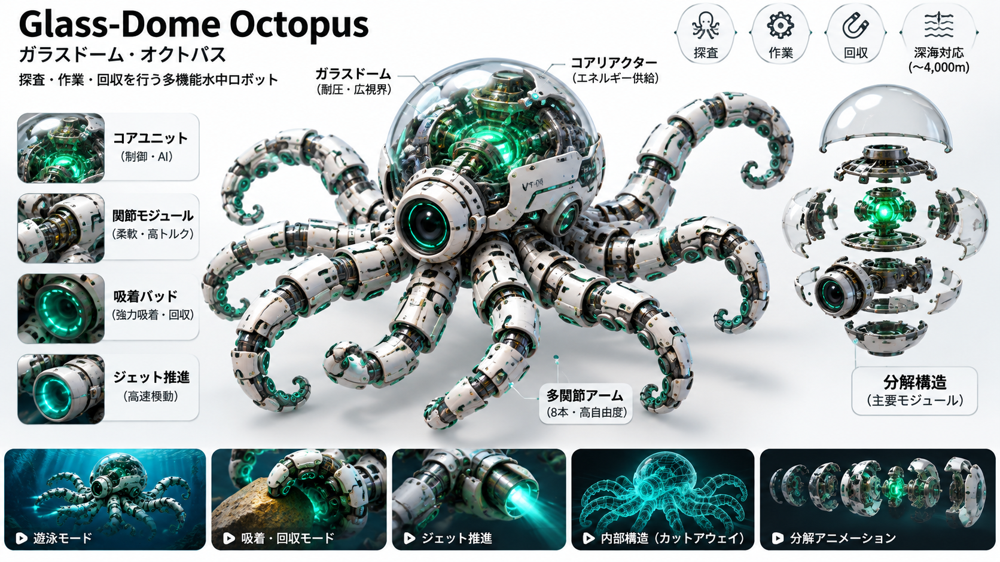

ガラスドーム・オクトパス

ドラッグで回転 ・ ピンチ／ホイールでズーム ・ ダブルタップで戻る
参考画像 1 枚を数値で測り、チェックリストを書いてから Three.js のコードだけで組み立て、STEP 3 で参考との差を計測して 2 ラウンド改善したモデルです。画像を 3D 空間に貼り付けてはいません。
内部の品質管理指標で、画像類似度ではありません。目標 85 点には未達です。
参考技術：Nyxera0x/cutaway（MIT）